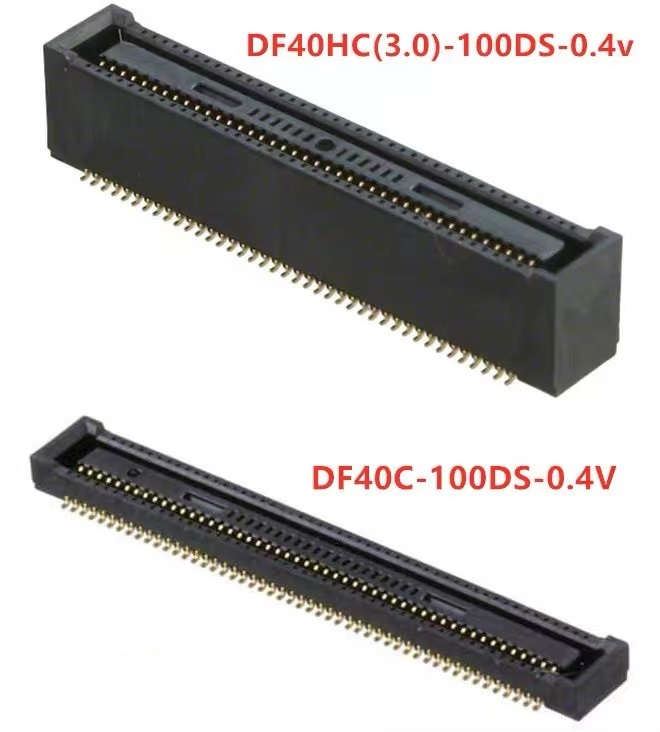
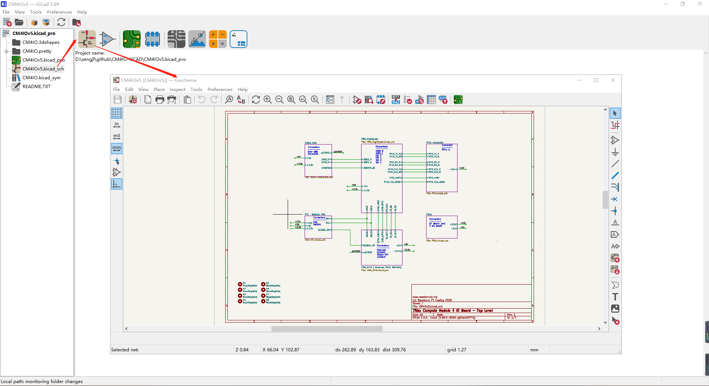

Compute Module 4
CM4是4B的核心板，定制性更好
芯片参考手册
CM4和4B用的是同一颗芯片，CM4可以认为是芯片的核心板，4B是加了外围的成品板
cm4手册
这个手册主要是告诉我们定制板子的时候该怎么设计，相关注意事项
cm4官方扩展板
官方io扩展板原理图：cm4io-datasheet.pdf
树莓派4b原理图：rpi_SCH_4b_4p0_reduced.pdf
连接器
-
3.1. Mechanical
Stacking height either:
a. 1.5mm with mating connector (clearance under CM4 0mm) : DF40C-100DS-0.4v
b. 3.0mm with mating connector (clearance under CM4 1.5mm): DF40HC(3.0)-100DS-0.4v

PCB设计参考
https://www.raspberrypi.org/documentation/hardware/computemodule/schematics.md
-
README.TXT
These files have been created in prerelease version 6 of KiCAD. If Version 6 isn’t released yet then to use them you will need to download a nightly build of KiCAD. NB Nightly builds my have issues so please check the issue tracker.使用KiCAD Version 6打开，目前稳定版只到Version 5，所以要用nightly build版本，经测试，确实是这样的
-
-
Nightly Development Builds
https://kicad-downloads.s3.cern.ch/index.html?prefix=windows/nightly/
-
https://docs.kicad.org/master/en/getting_started_in_kicad/getting_started_in_kicad.html
